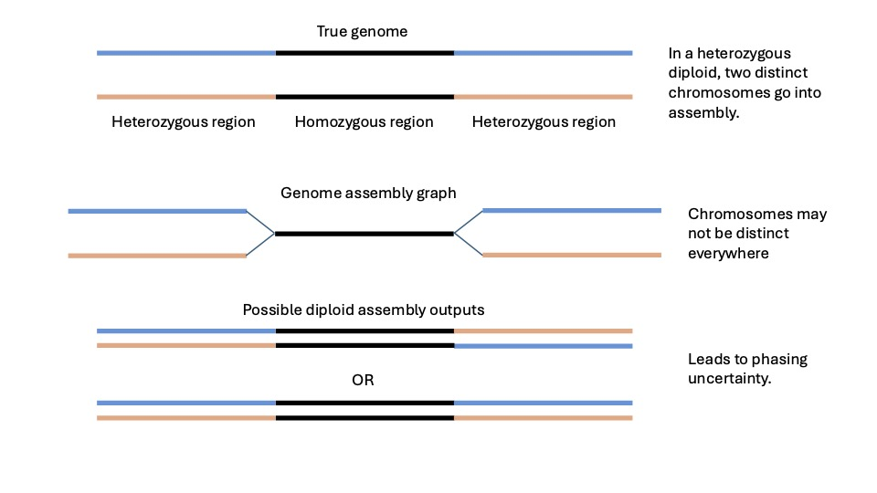
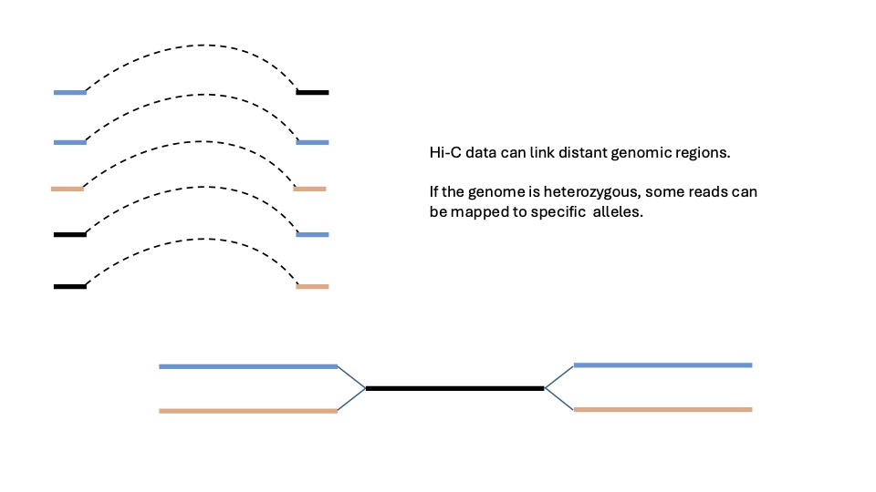
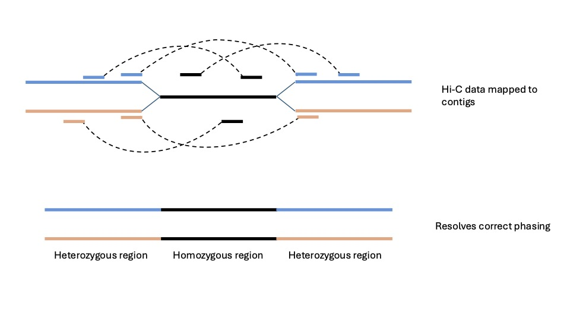

8 Assembling the genome
8.1 Learning Objectives
| Learning Objectives: |
| Assemble a genome sequence. |
| Scaffold a genome sequence using Hi-C data. |
In this chapter we’ll move on to assembling our genome, understanding the assembly outputs, and scaffolding it. Typically we would mix assembly evaluation steps in here in a workflow, but we’re going to save those for the next chapter.
8.2 Getting started.
In ISG5302 you learned about many of the different data types and combinations of data that can go into genome assembly. Here we’re going to use PacBio HiFi data and Hi-C data from Arima Genomics. We’ll generate a phased diploid assembly. The diploid part means we’re going to get two copies of our genome, and phased means that, a few switch errors notwithstanding, sequences will be as they were inherited from the parent.
8.2.1 PacBio data
The PacBio data is what generates the primary assembly. As we have seen, our PacBio data has mean base quality 35.6 for an error rate of 0.00028, or about 4.2 errors per 15kb read This is much lower than our estimated heterozygosity, which our lowest estimate said was around 10x higher, leading to a minimum expectation of 42 heterozygous sites per 15kb (though this will certainly vary considerable across the genome). This means that for much of the genome, the assembler will be able to see the two haplotypes in the genome as largely distinct entities and be able to peel them apart. For older long-read assemblies using data with much higher error rates this was not usually the case. Assemblers occasionally split out bits of diploid sequence, but inconsistently, and they did not identify it as such leading to artifactual duplication in the primary genome assembly that needed to be purged later on.
8.2.2 Hi-C data.
We’re going to use the Hi-C data in two different ways.
- To phase the diploid assembly.
- To scaffold our subchromosomal contigs into chromosome-scale sequences.
With just PacBio data we can often assemble two haplotypes, but because some genomic regions will have lower genetic diversity, there are likely to be regions where the haplotypes are not so distinct. This leads to problems with phasing. Sections of largely homozygous sequence will cause uncertainty in which haplotypes go together. Similar ambiguities in the genome assembly graph cause the assembly to be broken up into contigs that are not chromosome length.
 Hi-C gives us information about DNA sequences that are in physical proximity. The way it works is by cross-linking DNA that is in physical contact in the nucleus of the cell. The DNA is then digested by restriction enzymes, and cross-linked pieces of DNA are ligated together. This produces lots of artificial chimeric sequences composed of fragments of DNA that are in physical contact in the nucleus, but frequently much further apart than typical long-reads. Hi-C is part of a general class of “chromatin conformation capture” methods that were developed to try to understand the tertiary structure of DNA in the cell (are are still used for this purpose).
In genome assembly, however, we leverage this information to learn about the primary sequence. If we sequence a very large number of these chimeric fragments, we can both phase our haplotypes and order and orient contigs that have been broken up by unresolvable tangles in the genome assembly graph into chromosome-scale sequences (albeit with some gaps).

The way this works is by mapping the sequences back to the assembly and analyzing the frequency of inferred contacts between genomic regions. Due to complex tertiary structure of DNA and vagaries of read mapping, the contact frequency is not a simple linear function of distance along the sequence, but it often contains enough information to substantially improve a fragmented assembly and to phase haplotypes.
It should be noted Hi-C data can be used to phase within chromosomes but not across chromosomes. That is to say, you cannot learn from Hi-C data which chromosomes are maternal and which are paternal. For that you need actual parental data. Sex chromosomes are a general exception to this, with an exception to the exception that some organisms have mostly genetic sex determination but can nevertheless switch sexes such that a male offspring in a species with XY sex determination could conceivably inherit a Y chromosome from its mother and an X from its father. But that’s neither here nor there.

8.3 Assembling the genome
In this chapter we’re going to use the assembler hifiasm. It is fast and effective. It is built around high accuracy long reads (like PacBio HiFi), but it has features that can incorporate:
- Hi-C data for phasing (demonstrated in this chapter).
- Parental data, used to bin reads by parent of origin and phase haplotypes (across chromosomes).
- Ultra-long ONT data to improve the contiguity of the assembly.
Genome assembly has historically required pretty large amounts of memory, but hifiasm is relatively efficient. We’re going to request 24 cpus and 100G of memory. Note that per the documentation, hifiasm wants > 13x coverage per haplotype for assembly. We have almost 18x coverage, so we’ll be ok. With older methods (shorter reads or higher error rates) this kind of coverage would have been unthinkably low!
8.3.1 Running hifiasm
Let’s look at our script here: scripts/04_assembly/01_hifiasm.sh program call looks like this:
hifiasm \
-t 24 \
-o ${OUTDIR}/Fdiaphanus.asm \
--h1 ${INDIR}/fFunDia1_Banded_Killifish_R1_001.fastq.gz \
--h2 ${INDIR}/fFunDia1_Banded_Killifish_R2_001.fastq.gz \
${INDIR}/m64330e_221020_171856.bc1022--bc1022.hifi_reads.fastq.gz \
${INDIR}/m64334e_221030_084704.bc1022--bc1022.hifi_reads.fastq.gzthe --hn options provide the paired-end Hi-C data. The other two fastq.gz files are just two chunks of HiFi data (you can append as many fastq files as you need). Fdiaphanus.asm is the file prefix that hififasm uses.
seff output for this job:
Job ID: 8890455
Cluster: xanadu
User/Group: nreid/cbc
State: COMPLETED (exit code 0)
Nodes: 1
Cores per node: 24
CPU Utilized: 3-20:14:40
CPU Efficiency: 75.28% of 5-02:32:24 core-walltime
Job Wall-clock time: 05:06:21
Memory Utilized: 73.56 GB
Memory Efficiency: 21.02% of 350.00 GBThis indicates decent memory and CPU efficiency, and only 5 hours wall-time to do the assembly!
8.3.2 hifiasm output
hifiasm will generate quite a few files:
ll ${OUTDIR}-rw-r--r-- 1 nreid cbc 12G Feb 19 15:49 Fdiaphanus.asm.ec.bin
-rw-r--r-- 1 nreid cbc 1.3G Feb 19 16:50 Fdiaphanus.asm.hic.hap1.p_ctg.gfa
-rw-r--r-- 1 nreid cbc 3.1M Feb 19 16:50 Fdiaphanus.asm.hic.hap1.p_ctg.lowQ.bed
-rw-r--r-- 1 nreid cbc 29M Feb 19 16:50 Fdiaphanus.asm.hic.hap1.p_ctg.noseq.gfa
-rw-r--r-- 1 nreid cbc 1.3G Feb 19 16:51 Fdiaphanus.asm.hic.hap2.p_ctg.gfa
-rw-r--r-- 1 nreid cbc 3.3M Feb 19 16:51 Fdiaphanus.asm.hic.hap2.p_ctg.lowQ.bed
-rw-r--r-- 1 nreid cbc 28M Feb 19 16:51 Fdiaphanus.asm.hic.hap2.p_ctg.noseq.gfa
-rw-r--r-- 1 nreid cbc 2.7G Feb 19 16:47 Fdiaphanus.asm.hic.lk.bin
-rw-r--r-- 1 nreid cbc 1.3G Feb 19 15:57 Fdiaphanus.asm.hic.p_ctg.gfa
-rw-r--r-- 1 nreid cbc 2.9M Feb 19 15:58 Fdiaphanus.asm.hic.p_ctg.lowQ.bed
-rw-r--r-- 1 nreid cbc 31M Feb 19 15:57 Fdiaphanus.asm.hic.p_ctg.noseq.gfa
-rw-r--r-- 1 nreid cbc 3.0G Feb 19 15:56 Fdiaphanus.asm.hic.p_utg.gfa
-rw-r--r-- 1 nreid cbc 13M Feb 19 15:57 Fdiaphanus.asm.hic.p_utg.lowQ.bed
-rw-r--r-- 1 nreid cbc 55M Feb 19 15:56 Fdiaphanus.asm.hic.p_utg.noseq.gfa
-rw-r--r-- 1 nreid cbc 3.1G Feb 19 15:55 Fdiaphanus.asm.hic.r_utg.gfa
-rw-r--r-- 1 nreid cbc 13M Feb 19 15:56 Fdiaphanus.asm.hic.r_utg.lowQ.bed
-rw-r--r-- 1 nreid cbc 55M Feb 19 15:55 Fdiaphanus.asm.hic.r_utg.noseq.gfa
-rw-r--r-- 1 nreid cbc 30G Feb 19 16:08 Fdiaphanus.asm.hic.tlb.bin
-rw-r--r-- 1 nreid cbc 1.7G Feb 19 15:50 Fdiaphanus.asm.ovlp.reverse.bin
-rw-r--r-- 1 nreid cbc 8.3G Feb 19 15:50 Fdiaphanus.asm.ovlp.source.binYou can see an explanation of the files in the documentation. The suffixes you’ll see are:
*.bin: these are internal results tracking error correction and Hi-C mapping steps. We won’t do anything with them.*gfa: these are assembly graphs for various outputs. See the specification here.We will visualize, but not go over the details of these.noseq.gfa:.gfafiles contain the actual sequences along with the graph structure.noseq.gfacontains the graph structure without the sequences, making it much easier to load into a visualization program.
*lowQ.bed: these give “low quality” regions of the assembly.
Now, we have lots of examples of each of these suffixes,
hap1/hap2: these refer to our separated phased assemblies. So each contains information for only one set of haplotypes.utg/ctg:utgrefers to a “complete” assembly graph of “unitigs”, containing both haplotypes, whilectgrefers to a graph purged of one haplotype and simplified.ctgfiles contain the final products.r_/p_:r_files are “raw”, containing lots of potentially artifactual graph features, andp_files are processed. There are nor_ctgfiles.
In the end we have three files of greatest interest:
hap1.p_ctg.gfa: haplotype 1 assembly graph.hap1.p_ctg.gfa: haplotype 2 assembly graph.p_ctg.gfa: “primary” assembly. this is an unphased haploid assembly graph. it discards phase in order to favor higher contiguity.
This is a pretty confusing pile of files, but note that you can always look at the file sizes to validate that some contain both haplotypes, and some only half.
You may be wondering at this point, “where are my fasta files?!” We have to extract them ourselves.
See the script scripts/04_assembly/02_extractFASTAS.sh. We are going to use a simple awk call on each of our main .gfa files to extract the sequences into fasta format and then generate .fai indexes with samtools.
# extract fastas
awk '/^S/{print ">"$2;print $3}' ${INDIR}/Fdiaphanus.asm.hic.hap1.p_ctg.gfa >${OUTDIR}/Fdiaphanus_hap1.fa
awk '/^S/{print ">"$2;print $3}' ${INDIR}/Fdiaphanus.asm.hic.hap2.p_ctg.gfa >${OUTDIR}/Fdiaphanus_hap2.fa
awk '/^S/{print ">"$2;print $3}' ${INDIR}/Fdiaphanus.asm.hic.p_ctg.gfa >${OUTDIR}/Fdiaphanus_primary_contigs.fa
samtools faidx ${OUTDIR}/Fdiaphanus_hap1.fa
samtools faidx ${OUTDIR}/Fdiaphanus_hap2.fa
samtools faidx ${OUTDIR}/Fdiaphanus_primary_contigs.fa8.3.3 Examining the output
We’re going to have a superficial look at the files here. Ordinarily in a workflow we would evaluate these assemblies before doing anything else, but we’re going to save all the formal assembly evaluation for the next chapter. Let’s just do some simple linux/bash investigations for now.
How many sequences are there in each assembly?
grep -c "^>" results/04_assembly/hifiasm_fastas/*faresults/04_assembly/hifiasm_fastas/Fdiaphanus_hap1.fa:443
results/04_assembly/hifiasm_fastas/Fdiaphanus_hap2.fa:407
results/04_assembly/hifiasm_fastas/Fdiaphanus_primary_contigs.fa:355So yes, we can see the unphased primary assembly probably has a bit better contiguity because it has fewer total sequences.
How long are our longest contigs?
module load bioawk
for file in results/04_assembly/hifiasm_fastas/*fa
do echo $file
bioawk -c fastx '{print length($seq)}' ${file} | sort -rg | head -n 5
doneresults/04_assembly/hifiasm_fastas/Fdiaphanus_hap1.fa
42712095
40984032
34031268
32827360
30664417
results/04_assembly/hifiasm_fastas/Fdiaphanus_hap2.fa
35135847
33210927
30986683
29689966
25785669
results/04_assembly/hifiasm_fastas/Fdiaphanus_primary_contigs.fa
59533521
46286417
44726096
41084776
36275275Again, we’ve got better contiguity in the unphased assembly. This perhaps doesn’t matter a ton, however, because we’re going to use the Hi-C data to scaffold the assembly anyway.
How long is each assembly?
module load bioawk
for file in results/04_assembly/hifiasm_fastas/*fa
do echo $file
bioawk -c fastx '{n+=length($seq)}END{print n}' ${file}
doneresults/04_assembly/hifiasm_fastas/Fdiaphanus_hap1.fa
1356766612
results/04_assembly/hifiasm_fastas/Fdiaphanus_hap2.fa
1322093810
results/04_assembly/hifiasm_fastas/Fdiaphanus_primary_contigs.fa
1360163710All of them are in the 1.3gb range, which is where we expected based on the published assembly sizes at GenomeArk, but a bit higher than the prediction from GenomeScope 2.0
8.4 Scaffolding with Hi-C data
Now that we have our assemblies, we can use the Hi-C data (again) to scaffold. It seems reasonable to guess that a future version of hifiasm might incorporate this step automatically, as it has already quite a lot of work with the Hi-C data, but for now it does not.
We’re going to use the program YaHS.
8.4.1 Hi-C alignment
To run YaHS, we need to first align the Hi-C data to an assembly. We’re going to scaffold the two haplotypes here (not the unphased assembly).
YaHS requires you to first align the Hi-C data to the genome. Because Hi-C data is not like regular old paired-end sequence, we’re going to use some specialized scripts from Arima Genomics to process the alignments. They provide a bash script that can do the whole thing, but we modularized it and put it in array scripts.
Note that we have 120x coverage of Hi-C data. This is not really strictly necessary for scaffolding. The Wegrzyn Lab here at UConn often aims for 50x. Higher coverage, however, probably does help more with phasing especially in species with lower genetic diversity. Consider that to scaffold two sequences, you just need read pairs to span them, but to phase haplotypes, the read pairs have to span the sequences and land on heterozygous sites on both sequences to distinguish the haplotypes.
8.4.1.1 Index the assemblies
The first step is to map reads with bwa, so we need to index our assemblies. See script scripts/04_assembly/03_indexAssembly.sh. You should be fairly familiar with this kind of thing by now.
# which haplotype to index
HAPS=(hap1 hap2)
hap=${HAPS[$SLURM_ARRAY_TASK_ID]}
# input/output dirs
INDIR=../../results/04_assembly/hifiasm_fastas/
OUTDIR=${INDIR}/${hap}_index
mkdir -p ${OUTDIR}
# index
bwa-mem2 index -p ${OUTDIR}/${hap} ${INDIR}/Fdiaphanus_${hap}.fa8.4.1.2 Initial read mapping and trimming
The next step is to align the sequences and trim them. See script scripts/04_assembly/04_trimAlignHiC.sh.
There are two wrinkles here. First, the reads won’t be “properly paired” because of the nature of Hi-C data, so we’re going to align R1 and R2 separately and merge them later. Second, because of the chimeric nature of the fragments, we may get chimeric reads and we need to pick only one part of each alignment for the downstream analysis. Arima provides a perl script for this. We’ll do this with a 4-element array. We’ll show the entire script because it will be confusing otherwise.
#!/bin/bash
#SBATCH --job-name=trimAlignHiC
#SBATCH -n 1
#SBATCH -N 1
#SBATCH -c 12
#SBATCH --mem=20G
#SBATCH --qos=general
#SBATCH --partition=general
#SBATCH --mail-user=
#SBATCH --mail-type=ALL
#SBATCH -o %x_%A_%a.out
#SBATCH -e %x_%A_%a.err
#SBATCH --array=[0-3]
hostname
date
module load bwa-mem2/2.1
module load samtools/1.20
module load arimaHiCmap/1.0
# haplotype, R1/R2 variables
HAPS=(hap1 hap1 hap2 hap2)
hap=${HAPS[$SLURM_ARRAY_TASK_ID]}
RNS=(R1 R2 R1 R2)
rn=${RNS[$SLURM_ARRAY_TASK_ID]}
#input/output
INDIR=../../rawdata
OUTDIR=../../results/04_assembly/HiC_align
mkdir -p ${OUTDIR}
# genome index
INDEX=../../results/04_assembly/hifiasm_fastas/${hap}_index/${hap}
# fastq to align
FQ=${INDIR}/fFunDia1_Banded_Killifish_${rn}_001.fastq.gz
# set read group variable
RG=$(echo \@RG\\tID:Fdiaphanus\\tSM:Fdiaphanus\\tLB:Fdiaphanus\\tPL:ILLUMINA\\tPU:none)
# get script location
FFE=$(which filter_five_end.pl)
# trim fastqs, align them, pass them to a filter script (from Arima)
zcat ${FQ} |
awk '{ if(NR%2==0) {print substr($1,6)} else {print} }' |
bwa-mem2 mem -R ${RG} -t 8 ${INDEX} - |
samtools view -@ 4 -h - |
perl ${FFE} |
samtools view -Sb - >${OUTDIR}/${hap}_${rn}.bamWith 120x coverage, this takes around 7 hours for each file. Probably the Arima perl script is a bottleneck.
seff:
Job ID: 8893033
Array Job ID: 8893032_0
Cluster: xanadu
User/Group: nreid/cbc
State: COMPLETED (exit code 0)
Nodes: 1
Cores per node: 12
CPU Utilized: 2-16:16:12
CPU Efficiency: 74.07% of 3-14:46:24 core-walltime
Job Wall-clock time: 07:13:52
Memory Utilized: 11.53 GB
Memory Efficiency: 57.65% of 20.00 GB8.4.1.3 Combine R1/R2 and mark duplicates
Finally, we’re going to combine the R1/R2 reads into a single bam file, mark duplicates and sort.
# get locations
COMBINER=$(which two_read_bam_combiner.pl)
STATS=$(which get_stats.pl)
SAMTOOLS=$(which samtools)
# min mapQ
MAPQ_FILTER=10
# combine R1/R2 into a single bam, sort, mark duplicates
perl ${COMBINER} ${INDIR}/${hap}_R1.bam ${INDIR}/${hap}_R2.bam ${SAMTOOLS} ${MAPQ_FILTER} |
samtools view -Sh -t ${FAIDX} - |
samblaster |
samtools sort -T ${INDIR}/${hap}.tmp -@ 8 -o ${INDIR}/${hap}.bam -
# index bam file
samtools index ${INDIR}/${hap}.bam
# get statistics
perl ${STATS} ${INDIR}/${hap}.bam > ${INDIR}/${hap}.bam.statsThis step also takes 4-5 hours. seff:
Job ID: 8897661
Array Job ID: 8897661_0
Cluster: xanadu
User/Group: nreid/cbc
State: COMPLETED (exit code 0)
Nodes: 1
Cores per node: 10
CPU Utilized: 12:06:56
CPU Efficiency: 23.98% of 2-02:31:40 core-walltime
Job Wall-clock time: 05:03:10
Memory Utilized: 10.34 GB
Memory Efficiency: 103.44% of 10.00 GBThese files are pretty large, so it’s a good idea to remove the intermediate bam files when you’re done!
There is a .stats file produced at the end of this:
cat results/04_assembly/HiC_align/hap1.bam.statsAll 337342701
All intra 165910322
All intra 1kb 90064393
All intra 10kb 59097815
All intra 15kb 54056105
All intra 20kb 50744830
All inter 171432379This is categorizing how far apart Hi-C reads are mapping. inter means between sequences. Those are the ones that are useful for scaffolding and > 50% of the total.
You’re pretty familiar with bam files by this point, so we won’t look closely at them here.
8.4.2 Scaffolding with YaHS
With our processed alignments, running YaHS is very simple.
# input/output
HIC=../../results/04_assembly/HiC_align/
ASSEMBLIES=../../results/04_assembly/hifiasm_fastas
OUTDIR=../../results/04_assembly/scaffoldedAssemblies
mkdir -p ${OUTDIR}
# we're scaffolding both haplotypes separately
HAPS=(1 2)
hap=${HAPS[$SLURM_ARRAY_TASK_ID]}
# reference contig and
FASTA=${ASSEMBLIES}/Fdiaphanus_hap${hap}.fa
BAM=${HIC}/hap${hap}.bam
# run yahs
yahs ${FASTA} ${BAM} -o ${OUTDIR}/hap${hap}YaHS is remarkably fast and resource efficient, considering that it is parsing a 36G bam file with over 300 million read pairs in it. seff:
Job ID: 8898303
Array Job ID: 8898302_0
Cluster: xanadu
User/Group: nreid/cbc
State: COMPLETED (exit code 0)
Nodes: 1
Cores per node: 10
CPU Utilized: 00:25:20
CPU Efficiency: 9.95% of 04:14:30 core-walltime
Job Wall-clock time: 00:25:27
Memory Utilized: 9.19 GB
Memory Efficiency: 18.39% of 50.00 GBYaHS produces a lot of output, but the files marked “final” are all we need to care about:
ll results/04_assembly/scaffoldedAssemblies/*final*
-rw-r--r-- 1 nreid cbc 41K Feb 21 14:18 results/04_assembly/scaffoldedAssemblies/hap1_scaffolds_final.agp
-rw-r--r-- 1 nreid cbc 1.3G Feb 21 14:18 results/04_assembly/scaffoldedAssemblies/hap1_scaffolds_final.fa
-rw-r--r-- 1 nreid cbc 45K Feb 21 14:13 results/04_assembly/scaffoldedAssemblies/hap2_scaffolds_final.agp
-rw-r--r-- 1 nreid cbc 1.3G Feb 21 14:13 results/04_assembly/scaffoldedAssemblies/hap2_scaffolds_final.faThe .fa files are our final fasta files. The .agp files explain how our original contigs have been ordered, oriented (and sometimes split in the case of assembly errors) into the final scaffolds. We’re not going to go into those in detail, but they can be useful in downstream analyses if you see weird discontinuities in statistics calculated across the genome. Those discontinuities may reflect things like structural variation or other interesting biological phenomena, but if they coincide with contig joins, assembly issues may be a more likely explanation.
So have we seen much improvement?
module load bioawk
for file in results/04_assembly/scaffoldedAssemblies/*fa
do echo $file
bioawk -c fastx '{print length($seq)}' ${file} | sort -rg | head -n 5
doneresults/04_assembly/scaffoldedAssemblies/hap1_scaffolds_final.fa
65720995
63184880
62401756
62368939
60886621
results/04_assembly/scaffoldedAssemblies/hap2_scaffolds_final.fa
64516896
63288013
62533455
62213067
61373167Most definitely! Our top 5 scaffolds for both haplotypes are all > 60mb now!
The typical killifish chromosome number is 24. Is it obvious that we have a similar number of scaffolds, followed by some very small unassigned contigs? Let’s look at hap1:
file=results/04_assembly/scaffoldedAssemblies/hap1_scaffolds_final.fa
bioawk -c fastx '{print length($seq)}' ${file} | sort -rg | head -n 3065720995
63184880
62401756
62368939
60886621
60712699
60020578
58360359
57671870
57304110
57296931
57079034
56378567
55432593
54571977
53055266
52890125
51475775
50062768
47234043
46578514
46132080
45283444
33690216
2246716
2109776
1603000
1317465
1270000
1037890It sure looks like it. the 24th largest scaffold is 33.6mb, and the 25th is 2.2mb. We can safely say we’re looking at a chromosome-scale assembly here, albeit with some sequence that has not been assigned to chromosomes. In some species with larger numbers of chromosomes and very highly variable chromosome sizes (like birds), making this assumption based on chromosome size distribution would not be safe. And in fact, without knowledge of the karyotype, we can’t rule out that some of these “chromosomes” are just chromosome arms that failed to be properly joined.
At any rate, how many “unplaced” scaffolds do we have, and how much of the genome are they?
file=results/04_assembly/scaffoldedAssemblies/hap1_scaffolds_final.fa
bioawk -c fastx '{print length($seq)}' ${file} |
sort -rg |
tail -n +25 |
awk '{n+=$1}END{print n}'40993072So we have about 41mb of unplaced scaffolds, or about 3% of this haploid assembly Not too shabby! Somehow, in hap2 it’s even less, with 23.3mb unplaced, for 1.7% of the assembly.
8.5 Conclusions
We’ve assembled and scaffolded our genome. In a typical workflow, we would have done assembly evaluations after assembling and then again after scaffolding. We may also have chosen to try out multiple assemblers and evaluate those assemblies as well. In the course, however, we’re saving all the assembly evaluation stuff for the next chapter.